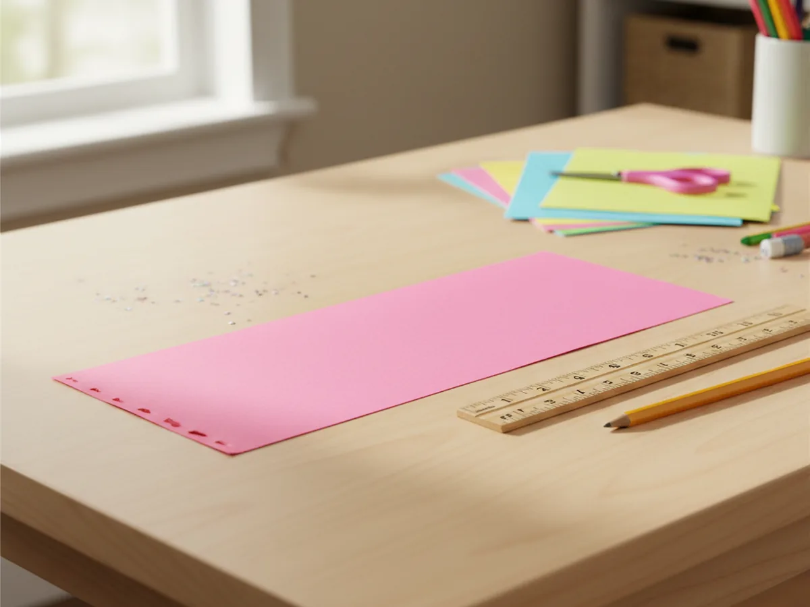
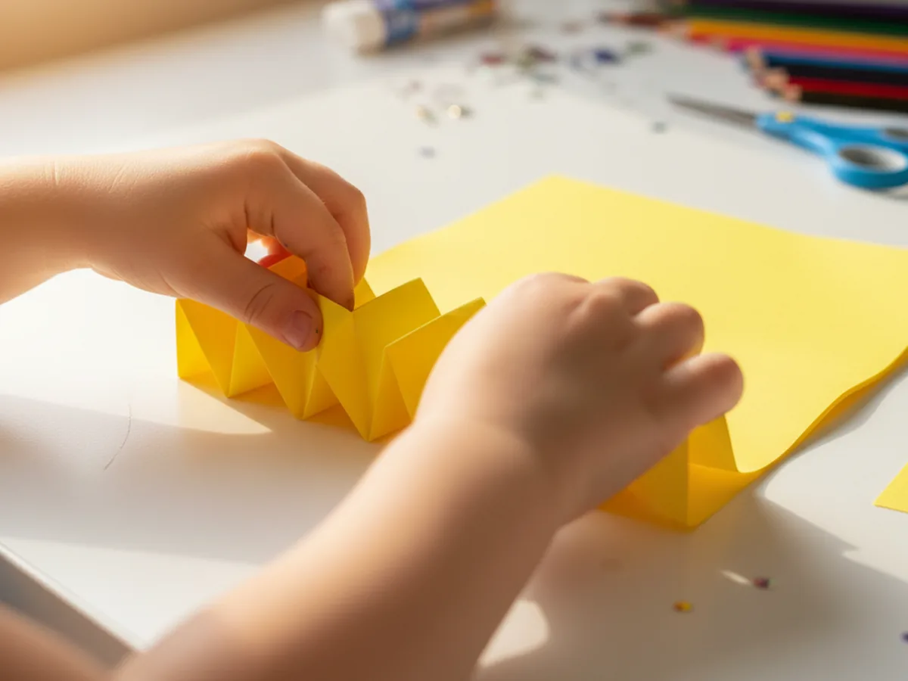
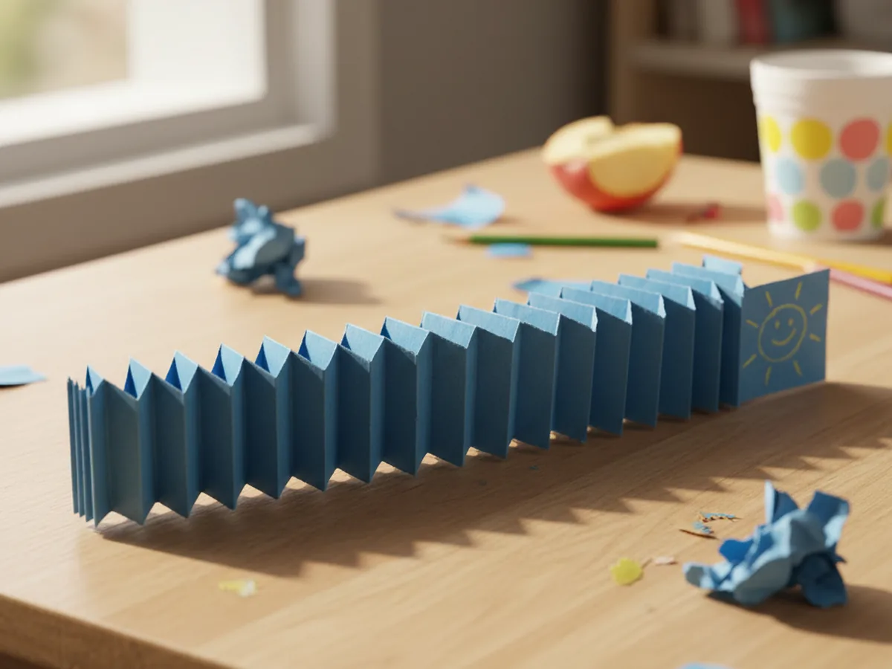
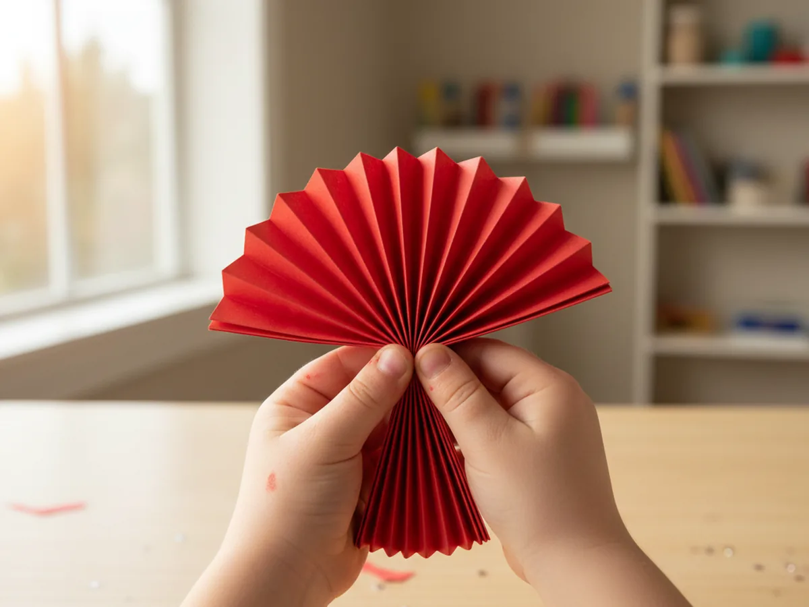
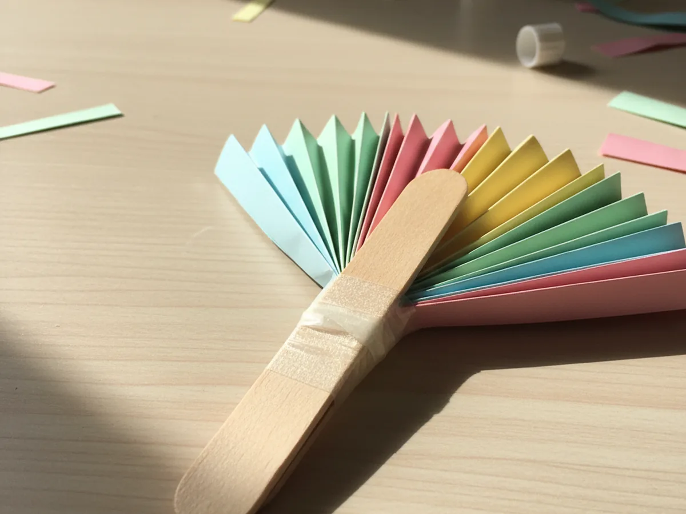
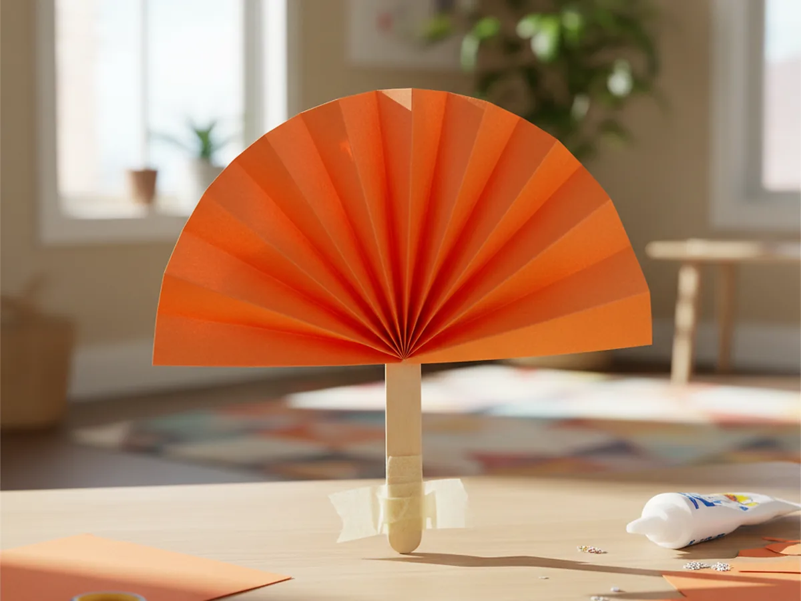
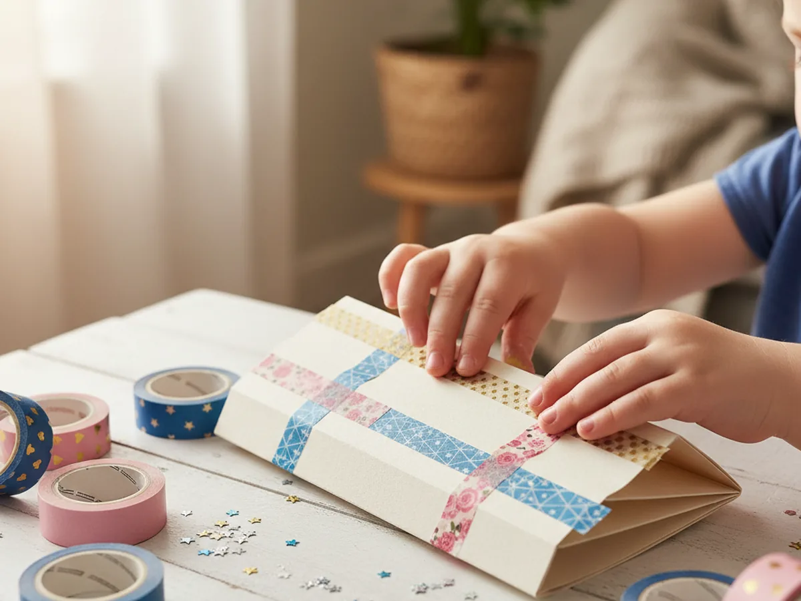

A paper fan craft is one of those projects that feels almost magical to a young child. You start with a flat sheet of paper, do a little back-and-forth folding, and suddenly a beautiful fan blooms open right in their hands. It is quick, low-mess, and genuinely satisfying for moms and kids alike.
This paper fan craft uses just a few sheets of construction paper and some basic supplies you probably already have at home. Little ones as young as three can help with the folding steps, and the decorating part at the end is where they really get to make it their own.
Why Kids Love This Craft
There is real delight in accordion folding for young children. The repetitive back-and-forth motion is easy to grasp and deeply satisfying, and watching a flat piece of paper transform into a functional, wave-able fan feels like a small act of magic. Most kids want to make another one the moment the first is finished.
This paper fan project is also a wonderful builder of fine motor skills. Pressing each fold crisp and flat takes control and focus, and threading little fingers carefully along each crease trains hand strength and coordination in a way that feels like play, not practice. Kids who find some crafts too frustrating absolutely thrive here because every fold they make is immediately visible and correct.
Beyond the folding, there is real pride in the finished object. A handmade paper fan is actually useful, not just decorative. Kids love to wave their fans around and show them off, which keeps the excitement alive long after the craft table is put away.
What You'll Need
You only need a handful of supplies to make a beautiful paper fan craft with your child.
- Construction paper, assorted colors, one sheet per fan
- Child-safe scissors, for trimming paper if needed
- Clear tape, to secure the base of the fan
- Washi tape, colorful patterns for decorating
- Glue sticks, for attaching the handle
- Craft sticks, optional popsicle stick handle
- Ruler and pencil, for marking even folds (helpful for beginners)
Step-by-Step Instructions
These steps are simple enough for little hands to follow along, and everything comes together in about 20 minutes.
Step 1: Cut Your Paper to Size
Start with one sheet of construction paper in your child's favorite color. For a standard fan, cut the sheet in half lengthwise to create a long rectangle about 4.5 inches by 12 inches. If you want a bigger, fuller fan, skip the cutting and use the whole sheet. Lay it flat on the table with the long side facing left and right.

Step 2: Make Your First Accordion Folds
Fold one short end of the paper forward about one inch, pressing the crease firmly with your fingernail. Then flip the whole paper over and fold again the same width in the opposite direction. You are building the back-and-forth pattern that gives the paper fan its pleated shape. Keep the folds as even as you can, but do not worry about perfection, a little wonkiness just adds charm.

Step 3: Accordion Fold All the Way Across
Continue folding back and forth until you reach the end of the paper. Press each fold down firmly as you go so that all the creases are sharp and clean. When you finish, you should have a long narrow pleated strip that looks a bit like a paper fan in its folded state. Run your fingers along the whole length one more time to make sure every crease is crisp.

Step 4: Fold the Strip in Half
Pinch the fully folded strip in the center and bring both ends together so that all the layers line up neatly. You are essentially folding the whole accordion in half. Hold it steady for a moment so it keeps its shape. This is the step that transforms the strip into a fan.

Step 5: Secure the Base with Tape
While holding the folded strip pinched at the base, wrap a piece of clear tape tightly around the very bottom to lock everything together. Press it firmly so the tape grips all the layers. For extra security, wrap a second piece of tape over the first. This is the pivot point of your paper fan, so it needs to be snug.

Step 6: Open and Shape the Fan
Hold the taped base in one hand and gently fan the two halves outward with your other hand until the paper opens into a full semicircle. Press the outer edges slightly so they stay open. Your paper fan craft now looks like a proper fan. If the two inner edges do not quite touch at the center, you can add a small piece of tape there to close the gap neatly.

Step 7: Decorate Your Fan
Now comes the most exciting part for little ones. Let your child add strips of colorful washi tape across the pleats for a patterned look, press on stickers, or draw their own designs with markers. Each fan turns into something totally unique and personal. If you attached a craft stick handle in Step 5, it makes the fan easy for small hands to hold and wave. 🎉

Variations to Try
Rainbow gradient fan: Use three or four half-sheets in different colors and tape them end to end before accordion folding. The finished fan will show a beautiful sweep of colors from one side to the other, and it looks stunning.
Mini decorative fans: Cut paper into quarters instead of halves for tiny fans that kids can use as gift toppers, birthday party favors, or decorations for a doll's house. They fold up in under five minutes and make sweet little keepsakes.
Double butterfly fan: Make two fans from matching colors and tape their bases together back to back. The result looks like a pair of butterfly wings and makes a gorgeous wall decoration or a playful prop for dress-up. 🦋
Final Thoughts
The paper fan craft is one of those timeless, simple projects that rewards even the youngest crafters with something genuinely beautiful. The folding technique is easy to teach, the materials are inexpensive, and the finished fans are so satisfying to hold and wave around that kids immediately want to make more in every color they can find.
Whether you make one together on a rainy afternoon or set up a little fan-making station for a birthday party, this handmade paper fan is the kind of craft that creates real, joyful memories. Save a few of the prettiest ones on the fridge or in a memory box. You will be glad you did. 💛
More Crafts You'll Love
If your child loved the folding in this project, these next crafts are a perfect fit.
Happy crafting, and enjoy every single fold along the way.